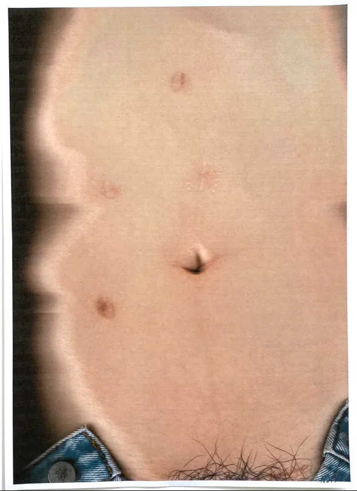
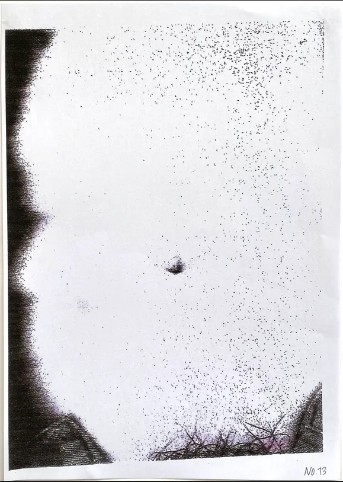
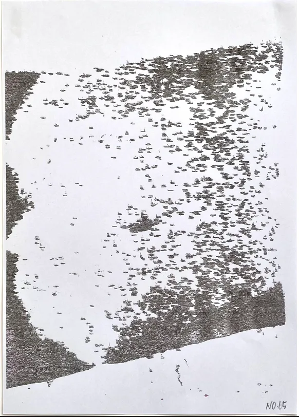
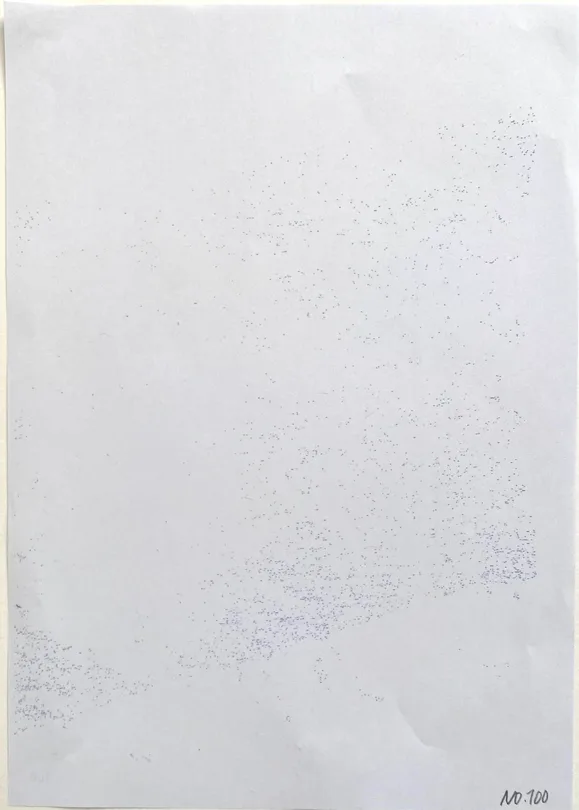

Weathered Abdomen(2021)
photocopied abdomen, print ink on paper

Weathered Abdomen began with an observation of subtle distortions and degradations that emerge when a physical object is scanned into a digital image, and conversely, when a digital image is printed back into the physical form.
To accelerate this weathering process, I photocopied my abdomen and repeatedly copied the resulting images a hundred times.
Through this cycle of translation between mediums, the original image undergoes erosion, transforming into noise and eventually dissolving into scattered abstract dots on the paper.



